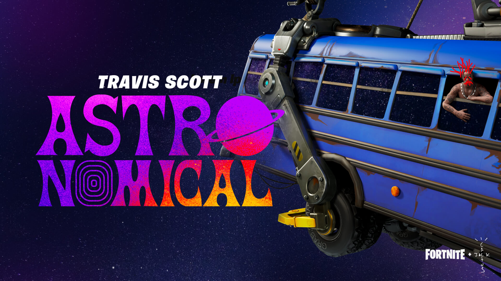
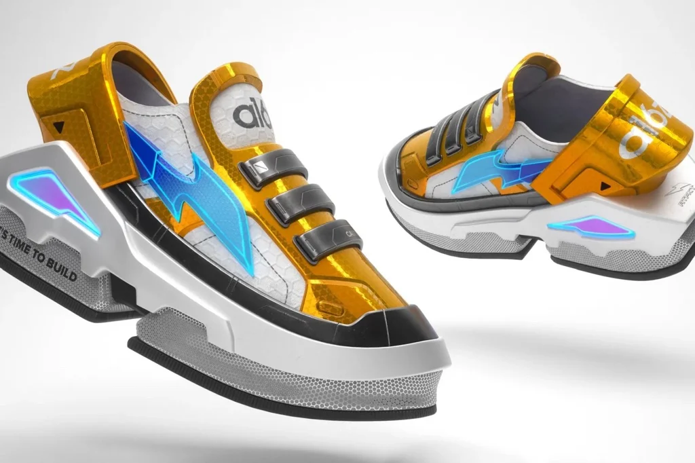
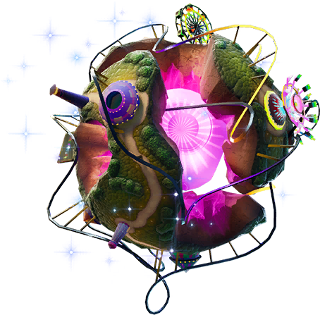

No esporte, o bilionário Peter Lim, dono do clube de futebol espanhol Va-
lência e o futebolista Cristiano Ronaldo apresentou em 2021 o ZujuGP.
SAÚDE
A equipa de engenheiros responsáveis pela repartição da HoloLens conseguem
criar salas de cirurgia compartilhada de forma 2D e 3D.

MÚSICA
Fortnite, realizou um dos maiores concertos virtuais da história em
conjunto com o rapper norte-americano Travis Scott contando com 16 milhões
de espectadores.

COMÉRCIO
Empresas como Gucci, Burberry, Adidas começaram a movimentar itens de design próprio onde o item só existe e pode ser
usado dentro do mundo virtual.
No esporte, o bilionário Peter Lim, dono do clube de futebol espanhol Valência e o futebolista Cristiano Ronaldo apresentou em 2021 o ZujuGP, com o
objetivo de criar uma plataforma onde os adeptos do desporto possam se en-
contrar, ver jogos, comprar itens relacionados ao futebol e explorar o metaverso
no ambiente do futebol, a plataforma teve como foco o mercado asiático. O
clube de futebol inglês Manchester City e a NFL também começaram seus primeiros passos nesse universo. A NBA , usou da ideia de um universo imersivo
digital para os fãs acompanhar os jogos, participar de entrevistas com lendas do
desporto e concertos, mais de 200 mil pessoas aderiram à ideia.
SAÚDE
Witham, diretor do Laboratório de Neurocirugia Espinhal de John Hopkins "é
como se tivesse um GPS na frente dos seus olhos".A pioneira no uso das
ferramentas do metaverso ligado à medicina é a HoloLens da empresa norte-
americana Microsoft que em 2016 apresentou a tecnologia de forma comercial.
A equipa de engenheiros responsáveis pela repartição da HoloLens conseguem
criar salas de cirurgia compartilhada de forma 2D e 3D, onde a equipe médica
consegue visualizar todas as pessoas e também equipamentos sem a necessidade
de que estejam presentes fisicamente nesses ambientes.
MÚSICA
Na música, em 2020 a desenvolvedora norte-americana de jogos eletrónicos
Epic Games, criadora de videojogos mais conhecida pelo jogo do estilo battle-
ground Fortnite, realizou um dos maiores concertos virtuais da história em
conjunto com o rapper norte-americano Travis Scott contando com 16 milhões
de espectadores, quebrando o recorde de público feito pela própria Epic Games
2 anos antes.O primeiro concerto virtual ficou a cargo do grupo musical
Duran Duran na plataforma do já citado Second Life em 2006.

COMÉRCIO
Empresas como Gucci, Burbery, Adidas entre outras começaram a movimen-
tar dentro do metaverso itens de design próprio onde o item só existe e pode ser
usado dentro do mundo virtual. De artigos comuns à artigos de luxo as grandes
marcas de acessórios e roupas estão aderindo à venda de seus itens de forma
unicamente digital usando a tecnologia de Non Fungible Token (NFT) para dar
o carácter único e exclusivo. A companhia The Fabricant é uma empresa holandesa especializada em criar acessórios e roupas completamente digitais com
desenho próprio ou para grandes empresas de luxo.